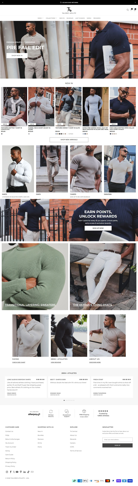
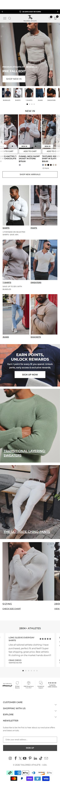

tailoredathlete.com · preços em USD (site .co.uk roda em GBP) · fundada em 2016, maior operador do nicho por volume de mídia
"True Muscle Fit": ombros/peito largos, afunilada na cintura. 11 cores (branco, preto, azul-claro, marinho, rosa, bordô, azul-aço...). Tamanhos S–XXXL.
| Linha | Preço |
|---|---|
| Athletic Fit Dress Shirt / Signature 2.0 | US$ 98 |
| Manga curta | US$ 90 |
| Performance Business (listrada) | US$ 105 |
| Bundle "4 Shirts for US$200" | US$ 50/un. |
| Título | Categoria |
|---|---|
| Premium Denim. Built To Move. | Jeans (expansão de categoria) |
| Tailored Without Going To The Tailor | Camisa social |
| Confidence You Can Wear | Camisa social |
| Josh Mair / Cyrus Savi | UGC/depoimento nomeado |
| Athletic Fit T-Shirts | Camiseta (expansão de categoria) |
Mix de confiança/autoestima, prova via criador nomeado e expansão de categoria (denim, camisetas) apoiada na garantia de fit já validada em camisas. Momentum: ESCALANDO — expandindo catálogo ativamente


| Big idea | Mecanismo | Gancho | Pre-sell | Objeção endereçada |
|---|---|---|---|---|
| Alfaiataria sem sair de casa | "True Muscle Fit": corte largo no peito/ombro, afunilado na cintura | Trocadilho ("Love at First Fit") + depoimento nomeado | +16K avaliações 5 estrelas, "Shipped from the USA" | "Vou parecer 'espremido' numa camisa social" → prova visual de fit + garantia de 35 dias |
| O que copiar | Onde está |
|---|---|
| Bundle "4 por US$200" como âncora de AOV, sem complicar com upsell separado | Coleção de camisas |
| Expansão gradual de categoria (camisa → polo → t-shirt → jeans) só depois de validar o fit signature | Estrutura de catálogo geral |
| Dado | Motivo | Método tentado |
|---|---|---|
| Captura visual da PDP | Bloqueado por verificação anti-bot Cloudflare | Playwright headless, 2 tentativas em execuções separadas — ambas retornaram o desafio "Verify you are human" |
| Tráfego mensal medido | Sem ferramenta de tráfego nesta sessão | — |
É a maior operação observada (5.309 anúncios históricos) e a referência de design/garantia mais madura. Não serve de molde operacional pro iniciante — serve de mapa de onde a marca pode chegar depois de validar o hero+bump inicial.